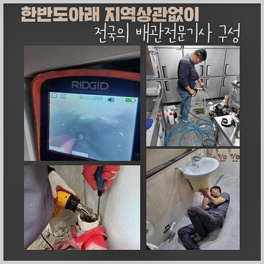
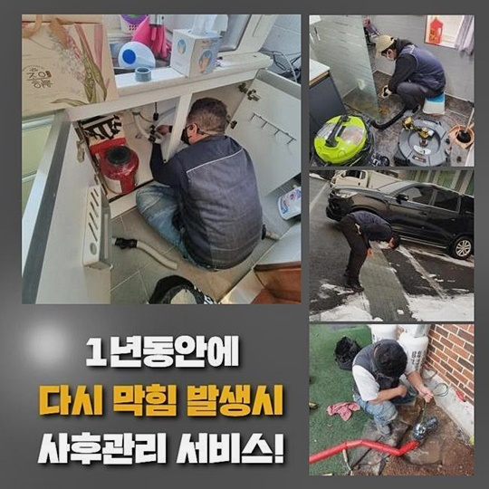
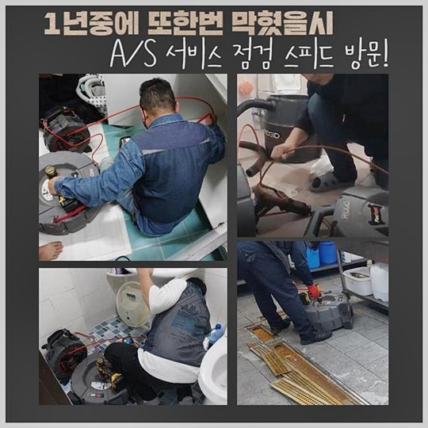
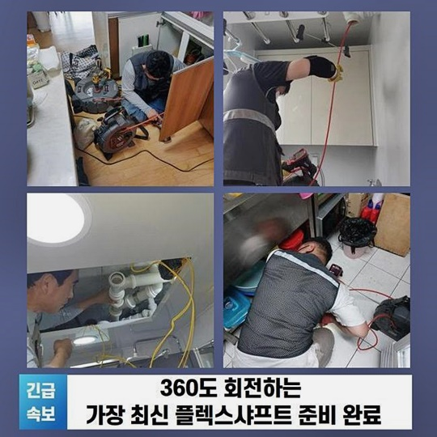
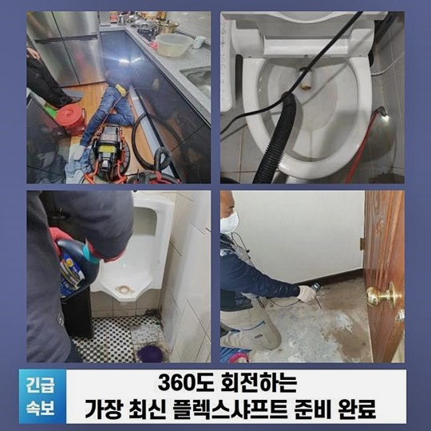
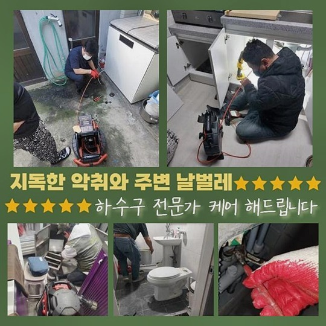

🏠 동작구 상도동화장실뚫음 신대방동 하수구뚫는곳 출장설비
용인시 처인구 배관막힘 전문 시공 후기

📋 작업 개요
- 위치: 용인시 처인구, 수원시 영통구, 화성시 동탄
- 서비스 유형: 배관막힘, 고압세척, 내시경점검
- 작업 일시:
- 업체명: 하수구수사대 (010-5615-2118)
🔍 문제 상황
동작구 상도동화장실뚫음 신대방동 하수구뚫는곳 출장설비
가정집에서 파이프가 차단되는 이유는 매우 많은데 개수대에서 역류 등이 일어나는 경우도 있으며 화장실에서 물빠짐이 적합하게 실행되지 않기에 고충을 느끼는 분들도 많답니다
그런 사항은 파이프에 들어가면 문제가 생기는 잔재가 빠져버렸거나 생리대나 플라스틱 용품들을 포함해 갖가지 슬러지들이 연속적으로 누가되어 발현될 가망성도 작지 않지만 건설 과정에서 시작된 파이프의 문제점에 연유하여 일어나는 지점도 생각보다 많답니다
금일은 구축아파트에서 일찍부터 배관뚫음을 속행하던 업무 가운데에 출장 요청을 받았어요
가정 내의 배수가 적절하게 안 되고 역류증세가 이곳저곳에서 크고 작은 양상으로 일어나고 있다는 연락을 받은 후 근방에서 대기중이었던 저희 팀이 즉시 방문하였죠
집 안의 소형 배수관에서 생겨난 정체가 아니라 메인 배관에서 생긴 트러블은 높은 수압의 물청소를 이용한 잔재 소멸이 효능이 큰 해결 방안이죠
이에 따라 이런 사안에서 알맞게 소제하는데 마땅한 세척기계를 구비한 뒤 방문하게 되었습니다
저희들처럼 고가의 기계들을 보유하지 않은 기술자들은 알맞은 실행을 할 수가 없기에 일이 어설프게 진행될 여지가 있고 문제 해결이 온전히 나타나지 않을 수 있어요
흡입기를 가동하거나 분쇄용 샤프트기기로만 사태를 잠재우려하면 개별 가정 안에 있는 배수관과는 상이하게 파이프의 크기가 커서 정체해소가 힘겨워지게 되는 것입니다

🔎 원인 분석
💡 전문가 진단: 정밀 진단 장비를 사용하여 슬러지의 고착 여부를 판명하고 타격/세척 작업을 실시했습니다.
육안으로 목격되는 부분의 막힘만 해소한다면 다소간 배수흐름이 나타날 수는 있겠으나 한달도 되지 않아서 물길이 막혀버리는 사태가 나타나서 갑갑해지기에 이런 내용을 처치하려고 전문가를 물색할 땐 다양한 장비들을 소지한 데다가 문의할 것을 추천해 드립니다
의뢰지에 도착하여서 앞서 배관비트실로 이동해 중앙 하수관에 어떠한 문제가 일어난 것인지 알아보게 되었답니다
고착화된 찌꺼기로 인한 형태일 수 있지만 특이한 물체가 배관을 막아서 순간적으로 발현된 정황일 가능성도 배제할 수 없어서 여러 변인을 고려해야 하였답니다
세밀하게 배관의 내측을 알아보기 위하여 배관카메라가 필수적입니다
저흰 이런 작업 연륜이 넉넉하기에 이러한 구조적인 모습에서 자주 일어나는 문제요소를 금새 탐지해내는 고가의 기기들과 개별 작업에서 습득한 테크닉이 존재하므로 고약한 장애가 일어났어도 속히 검토하여 수습방책을 제안하도록 모든 노력을 기울여 이동하여 고장을 처리하고 있습니다
정체가 심대한 위치는 어떤 자리인지 섬세하게 내시경으로 관측하며 일을 지속했습니다
촬영되는 모습을 살펴보았더니 공동배수관의 안은 다양한 침전물들과 고형물들로 벽면이 정체된 상황이라 물의 진행이 힘겨운 모습이었습니다
가정 내에서 매일같이 쓰는 샴푸나 세정액 등의 제품들에 혼합된 성분들과 머리뭉치 거기에 더해 식기 세척과정에서 발생된 다양한 잔재들을 비롯한 수천 가지의 노폐물들이 한데 뭉쳐서 쌓이면 차후 벽고철과 같이 강력한 소석회성분으로 변질될 수 있는데요
이것들을 곧바로 세정하지 않은 상태로 방치해 버린다면 점진적으로 사태가 악화되고 통수에 장애를 일으켜 중앙 파이프에 트러블이 발생하는 거예요

🔧 작업 과정
2주 전에 출장갔던 5층 빌라에서는 애완동물이 욕실에서 쓰는 모래 등을 상층에서 배수공으로 버리는 행위로 인해 흡사한 막힘이 목도되기도 했고 타입은 이처럼 내방장소마다 차이가 나죠
누적이 심화된 처소의 관을 분리시킨 다음에 세정업무를 해나가면 내부에 고였던 물과 노폐물이 바깥으로 유출되는 일이 발생되어 환경이 오손될 여지가 있으므로 우선적으로 보호비닐로 커버를 해 주어야 해요
이러한 보호 활동을 빈틈없이 마감한 다음에 고착화된 배관 안의 침전물들을 세척할 채비를 끝마쳤죠
관 자체가 기름하여 가운데 위치에서도 뚫음이 시행되어야 했기에 탐지 설비를 이용해서 어느 부위까지 작업을 이행하여야 할지 결정하는 시간을 가졌습니다
그 부분도 섬세히 커버링을 속행해서 혹여 외부로 이물이 튀게되는 경우에 대비하였어요
부분적으로 절삭작업을 해서 세정 업무를 이행할 수 있는 최소한의 공간을 마련해 두었죠
첫부분부터 중반에 이르기까지 양방향에서 소제를 하는 시공을 속행하여 내부에 답답하게 쌓인 상당량의 찌꺼기를 없앴답니다
물청소 업무중에는 파이프 벽면에 끈끈하게 고정되었던 노폐물들이 지속적으로 해체되어가는 것이 목격되었답니다
해당 장비는 출력량이 커서 짧은 시간에 높은 효율을 나타내어 안에 쌓인 이물들을 소멸시키는 것은 어렵지 않았어요
단번에 전체적인 하수관 덩어리들을 사라지게 하는 건 까다롭기에 부위를 나눈 다음 센터에서 내시경cctv를 통해 노폐물들이 모인 곳을 꼼꼼하게 알아낸 다음에 수압을 점차적으로 높이고 마무리지을 수 있었어요
과하게 경화된 슬러지들은 약제들을 활용하는 상황도 존재하지만 해당 지점은 그 업무까지 이행할 필요성은 없었어요
청소를 마친 다음 재차 촬영설비를 넣어 깔끔하게 파이프 세정 시공이 실행됐는지 판단하였고 일거에 고용량의 액체를 내리는 시험도 빠뜨리지 않았죠
해당 건축물에서는 군데군데 물샘자국이 목도되었는데 유난히 배관 근처에 크고작은 수분이 잠입한 흔적이 보였답니다
대략적인 구조를 파악해보니 세대 내부로 이어지는 관이 노후되어 갈라져 있어 신제품으로 바꿀 필요성이 있었지만 구조물 전반적인 배관 막힘이 발생해 해결규모가 컸기 때문에 이 부분을 수습하는 것에 업무가 대다수 소모됐고 저녁시간이 도래하였기에 차후 업무는 이튿날 들어와서 마무리짓기로 약속한 뒤 돌아가게 되었답니다


✅ 작업 완료
이 처소는 관리소장에게 10세대가 넘는 가정에서 동시적으로 물이 막힌다는 항의를 받아서 제법 신속히 사태를 판단하고 우리팀에게 의뢰를 주셨기 때문에 큰 무리없이 마무리지을 수 있었는데요
여러가지 증상을 동반한 물막힘 증세나 역류증상에 의하여 불편을 겪고 있으시다면 배관 전문가에게 의뢰하여 극복해나가실 것을 권장합니다
저희는 재빠른 이동이 가능하며 솔직하게 비용적인 부분을 오픈하니 우려하지 않아도 됩니다
길게 고민하지 마시고 시공의뢰를 하시면 심혈을 기울여 청소하여 흡족한 성과로 회답해 드리겠습니다



⚠️ 하수구 배관 막힘 예방 및 관리 가이드
- ✅ 머리카락, 비닐, 물티슈 등 물에 분해되지 않는 이물질은 절대 흘려보내지 마세요.
- ✅ 기름기 많은 식기는 설거지 전 키친타올로 먼저 기름때를 닦아내세요.
- ✅ 주기적으로 배수구에 뜨거운 물을 가득 부어주어 유지방 고착을 방지하세요.
- ✅ 작업 후 1년 이내 재발 시 무상 A/S 보증 서비스를 제공합니다.
💡 핵심 정리
- 확실한 장비 작업(내시경 점검 및 샤프트 스케일링)으로 원인을 뿌리 뽑습니다.
- 작업 후 1년 이내에 동일한 부위 재발 시 100% 무상 A/S 서비스를 보장합니다.
- 서울 · 경기 · 인천 전 지역에 24시간 언제든 긴급 출동할 수 있도록 항시 대기 중입니다.
❓ 자주 묻는 질문 (FAQ)
🚨 용인시 처인구 배관막힘 문제로 고민이신가요?
정확한 원인 진단과 확실한 시공으로 재발 없는 해결을 약속드립니다.
24시간 긴급 출동 | 서울 · 경기 · 인천 전지역 | 1년 내 재발 시 무상 A/S